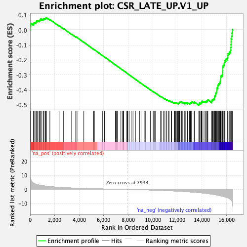
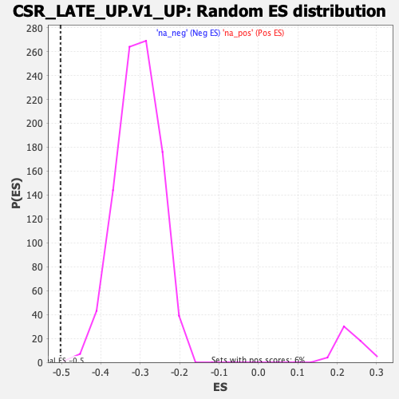

| | | Dataset | DE_genes2 |
| Phenotype | NoPhenotypeAvailable |
| Upregulated in class | na_neg |
| GeneSet | CSR_LATE_UP.V1_UP |
| Enrichment Score (ES) | -0.50263107 |
| Normalized Enrichment Score (NES) | -1.6438186 |
| Nominal p-value | 0.0010604454 |
| FDR q-value | 0.003856689 |
| FWER p-Value | 0.079 |
Table: GSEA Results Summary

Fig 1: Enrichment plot: CSR_LATE_UP.V1_UP
Profile of the Running ES Score & Positions of GeneSet Members on the Rank Ordered List
| PROBE | GENE SYMBOL | GENE_TITLE | RANK IN GENE LIST | RANK METRIC SCORE | RUNNING ES | CORE ENRICHMENT | | 1 | ST3GAL4 | | | 14 | 10.609 | 0.0267 | No |
| 2 | WSB2 | | | 42 | 7.704 | 0.0451 | No |
| 3 | LTBP2 | | | 266 | 4.591 | 0.0434 | No |
| 4 | KISS1 | | | 324 | 4.319 | 0.0511 | No |
| 5 | GYS1 | | | 466 | 3.786 | 0.0524 | No |
| 6 | DCBLD1 | | | 509 | 3.685 | 0.0594 | No |
| 7 | ALKBH7 | | | 580 | 3.470 | 0.0641 | No |
| 8 | YIPF3 | | | 728 | 3.153 | 0.0633 | No |
| 9 | VEGFC | | | 793 | 3.057 | 0.0674 | No |
| 10 | SERPINB7 | | | 837 | 2.969 | 0.0724 | No |
| 11 | CDK5 | | | 955 | 2.787 | 0.0725 | No |
| 12 | SLC16A3 | | | 1074 | 2.630 | 0.0722 | No |
| 13 | ASB6 | | | 1127 | 2.569 | 0.0757 | No |
| 14 | NMB | | | 1236 | 2.439 | 0.0754 | No |
| 15 | MMP3 | | | 1280 | 2.377 | 0.0790 | No |
| 16 | KCNC4 | | | 1329 | 2.328 | 0.0821 | No |
| 17 | MAZ | | | 1608 | 2.082 | 0.0705 | No |
| 18 | TUBA4A | | | 2362 | 1.516 | 0.0285 | No |
| 19 | MRAS | | | 2730 | 1.318 | 0.0095 | No |
| 20 | CXCL6 | | | 3386 | 1.044 | -0.0277 | No |
| 21 | SLC25A11 | | | 3716 | 0.925 | -0.0454 | No |
| 22 | TAGLN3 | | | 3820 | 0.889 | -0.0494 | No |
| 23 | TSPAN13 | | | 4376 | 0.728 | -0.0814 | No |
| 24 | IGFBP3 | | | 5172 | 0.526 | -0.1285 | No |
| 25 | TOMM34 | | | 5238 | 0.509 | -0.1312 | No |
| 26 | PSMD2 | | | 5887 | 0.368 | -0.1698 | No |
| 27 | TIMP3 | | | 6064 | 0.333 | -0.1797 | No |
| 28 | TIMP1 | | | 6949 | 0.163 | -0.2332 | No |
| 29 | NSG1 | | | 7007 | 0.154 | -0.2363 | No |
| 30 | IL7R | | | 7029 | 0.150 | -0.2372 | No |
| 31 | KRT18 | | | 7110 | 0.132 | -0.2417 | No |
| 32 | NKX2-1 | | | 7400 | 0.081 | -0.2591 | No |
| 33 | CYP4B1 | | | 7512 | 0.063 | -0.2657 | No |
| 34 | TCF19 | | | 7598 | 0.049 | -0.2708 | No |
| 35 | CASP2 | | | 7600 | 0.049 | -0.2707 | No |
| 36 | MT1L | | | 7619 | 0.044 | -0.2717 | No |
| 37 | CDH2 | | | 7836 | 0.012 | -0.2849 | No |
| 38 | FKBP1A | | | 7929 | 0.001 | -0.2905 | No |
| 39 | PGM2 | | | 7941 | -0.001 | -0.2912 | No |
| 40 | TUBG1 | | | 7955 | -0.003 | -0.2919 | No |
| 41 | PSMC3 | | | 8065 | -0.021 | -0.2985 | No |
| 42 | PREB | | | 8072 | -0.022 | -0.2988 | No |
| 43 | PARP11 | | | 8235 | -0.047 | -0.3086 | No |
| 44 | ILF2 | | | 8387 | -0.074 | -0.3176 | No |
| 45 | CIAPIN1 | | | 8583 | -0.108 | -0.3293 | No |
| 46 | CCND3 | | | 8929 | -0.178 | -0.3499 | No |
| 47 | MT1F | | | 9042 | -0.201 | -0.3562 | No |
| 48 | FARSA | | | 9297 | -0.265 | -0.3710 | No |
| 49 | KATNAL1 | | | 9363 | -0.279 | -0.3742 | No |
| 50 | ARHGEF1 | | | 9389 | -0.286 | -0.3750 | No |
| 51 | GINS3 | | | 9801 | -0.401 | -0.3990 | No |
| 52 | MT2A | | | 10037 | -0.470 | -0.4122 | No |
| 53 | DRAP1 | | | 10144 | -0.505 | -0.4173 | No |
| 54 | NUDC | | | 10225 | -0.531 | -0.4208 | No |
| 55 | DCTPP1 | | | 10624 | -0.670 | -0.4434 | No |
| 56 | MAPRE1 | | | 10731 | -0.701 | -0.4480 | No |
| 57 | IMP4 | | | 10871 | -0.754 | -0.4546 | No |
| 58 | PDLIM5 | | | 10987 | -0.796 | -0.4595 | No |
| 59 | NOC2L | | | 11132 | -0.853 | -0.4661 | No |
| 60 | PPP5C | | | 11140 | -0.857 | -0.4643 | No |
| 61 | AHSA1 | | | 11294 | -0.924 | -0.4712 | No |
| 62 | POLE3 | | | 11326 | -0.937 | -0.4707 | No |
| 63 | SRM | | | 11503 | -1.004 | -0.4788 | No |
| 64 | BEX1 | | | 11531 | -1.019 | -0.4778 | No |
| 65 | NUP88 | | | 11747 | -1.108 | -0.4881 | No |
| 66 | EIF5A | | | 11790 | -1.127 | -0.4877 | No |
| 67 | EIF3B | | | 11805 | -1.134 | -0.4856 | No |
| 68 | GTF3C6 | | | 11848 | -1.152 | -0.4852 | No |
| 69 | TPM2 | | | 11957 | -1.198 | -0.4887 | No |
| 70 | SAMD11 | | | 12017 | -1.229 | -0.4891 | No |
| 71 | ITGA6 | | | 12086 | -1.267 | -0.4899 | No |
| 72 | PA2G4 | | | 12113 | -1.278 | -0.4882 | No |
| 73 | DNAJB11 | | | 12147 | -1.304 | -0.4868 | No |
| 74 | POLR3K | | | 12148 | -1.305 | -0.4834 | No |
| 75 | MT1X | | | 12189 | -1.322 | -0.4824 | No |
| 76 | COPS3 | | | 12216 | -1.334 | -0.4806 | No |
| 77 | MT1H | | | 12304 | -1.375 | -0.4823 | No |
| 78 | EML1 | | | 12334 | -1.394 | -0.4804 | No |
| 79 | DTYMK | | | 12442 | -1.447 | -0.4832 | No |
| 80 | CMC2 | | | 12600 | -1.532 | -0.4888 | No |
| 81 | UMPS | | | 12645 | -1.559 | -0.4874 | No |
| 82 | SMS | | | 12706 | -1.590 | -0.4870 | No |
| 83 | PRMT5 | | | 12808 | -1.652 | -0.4889 | No |
| 84 | HAUS2 | | | 12833 | -1.675 | -0.4860 | No |
| 85 | PDCL3 | | | 12993 | -1.765 | -0.4911 | No |
| 86 | KIF22 | | | 13043 | -1.792 | -0.4894 | No |
| 87 | MET | | | 13065 | -1.808 | -0.4860 | No |
| 88 | POLD1 | | | 13115 | -1.833 | -0.4842 | No |
| 89 | CTPS1 | | | 13171 | -1.873 | -0.4827 | No |
| 90 | FAM216A | | | 13182 | -1.880 | -0.4785 | No |
| 91 | CRISPLD2 | | | 13377 | -2.012 | -0.4851 | No |
| 92 | C19orf48 | | | 13399 | -2.025 | -0.4811 | No |
| 93 | PSMD14 | | | 13753 | -2.288 | -0.4967 | Yes |
| 94 | MCM3 | | | 13783 | -2.315 | -0.4924 | Yes |
| 95 | EXOSC9 | | | 13799 | -2.331 | -0.4873 | Yes |
| 96 | FEN1 | | | 13911 | -2.426 | -0.4878 | Yes |
| 97 | ACTL6A | | | 13957 | -2.463 | -0.4841 | Yes |
| 98 | HIP1 | | | 13991 | -2.489 | -0.4797 | Yes |
| 99 | SNRPA1 | | | 14016 | -2.506 | -0.4746 | Yes |
| 100 | MTHFD1 | | | 14176 | -2.666 | -0.4774 | Yes |
| 101 | AP1S2 | | | 14294 | -2.778 | -0.4773 | Yes |
| 102 | FAM83D | | | 14362 | -2.844 | -0.4740 | Yes |
| 103 | UTP18 | | | 14449 | -2.937 | -0.4717 | Yes |
| 104 | NDC1 | | | 14488 | -2.975 | -0.4662 | Yes |
| 105 | NUDCD1 | | | 14812 | -3.377 | -0.4772 | Yes |
| 106 | HMGB1 | | | 14818 | -3.383 | -0.4687 | Yes |
| 107 | LMNB2 | | | 14879 | -3.473 | -0.4633 | Yes |
| 108 | FANCA | | | 14968 | -3.594 | -0.4594 | Yes |
| 109 | FARSB | | | 15031 | -3.687 | -0.4536 | Yes |
| 110 | GMNN | | | 15032 | -3.688 | -0.4440 | Yes |
| 111 | CBFB | | | 15077 | -3.762 | -0.4369 | Yes |
| 112 | ZWINT | | | 15107 | -3.798 | -0.4288 | Yes |
| 113 | HERC4 | | | 15133 | -3.824 | -0.4204 | Yes |
| 114 | TEX30 | | | 15194 | -3.913 | -0.4139 | Yes |
| 115 | CDCA8 | | | 15225 | -3.955 | -0.4055 | Yes |
| 116 | CCDC34 | | | 15229 | -3.961 | -0.3954 | Yes |
| 117 | SLC16A5 | | | 15241 | -3.988 | -0.3857 | Yes |
| 118 | MT1G | | | 15309 | -4.126 | -0.3790 | Yes |
| 119 | CHEK2 | | | 15311 | -4.128 | -0.3684 | Yes |
| 120 | EZH2 | | | 15352 | -4.214 | -0.3599 | Yes |
| 121 | YEATS4 | | | 15445 | -4.381 | -0.3541 | Yes |
| 122 | MYBL2 | | | 15492 | -4.462 | -0.3453 | Yes |
| 123 | NETO2 | | | 15507 | -4.497 | -0.3345 | Yes |
| 124 | TRIP13 | | | 15527 | -4.544 | -0.3239 | Yes |
| 125 | RAD18 | | | 15531 | -4.556 | -0.3122 | Yes |
| 126 | ZWILCH | | | 15582 | -4.659 | -0.3032 | Yes |
| 127 | UHRF1 | | | 15683 | -4.875 | -0.2966 | Yes |
| 128 | RRM2 | | | 15702 | -4.911 | -0.2849 | Yes |
| 129 | UBE2C | | | 15704 | -4.913 | -0.2722 | Yes |
| 130 | RPF2 | | | 15709 | -4.930 | -0.2597 | Yes |
| 131 | FOXM1 | | | 15710 | -4.931 | -0.2469 | Yes |
| 132 | BIRC5 | | | 15741 | -4.998 | -0.2357 | Yes |
| 133 | CDK1 | | | 15810 | -5.156 | -0.2265 | Yes |
| 134 | PRIM1 | | | 15856 | -5.276 | -0.2155 | Yes |
| 135 | LYAR | | | 15888 | -5.372 | -0.2034 | Yes |
| 136 | PAICS | | | 15966 | -5.553 | -0.1937 | Yes |
| 137 | HAT1 | | | 16101 | -5.959 | -0.1864 | Yes |
| 138 | CDC7 | | | 16121 | -6.016 | -0.1720 | Yes |
| 139 | SNORD22 | | | 16134 | -6.058 | -0.1570 | Yes |
| 140 | EEF1E1 | | | 16236 | -6.496 | -0.1462 | Yes |
| 141 | ANLN | | | 16350 | -7.214 | -0.1344 | Yes |
| 142 | ZNF367 | | | 16367 | -7.350 | -0.1163 | Yes |
| 143 | CDC6 | | | 16375 | -7.439 | -0.0974 | Yes |
| 144 | NUF2 | | | 16382 | -7.475 | -0.0783 | Yes |
| 145 | CLSPN | | | 16384 | -7.528 | -0.0588 | Yes |
| 146 | SHCBP1 | | | 16441 | -8.157 | -0.0411 | Yes |
| 147 | PBK | | | 16458 | -8.487 | -0.0200 | Yes |
| 148 | CKAP2 | | | 16486 | -9.390 | 0.0027 | Yes |
Table: GSEA details [plain text format]

Fig 2: CSR_LATE_UP.V1_UP: Random ES distribution
Gene set null distribution of ES for CSR_LATE_UP.V1_UP